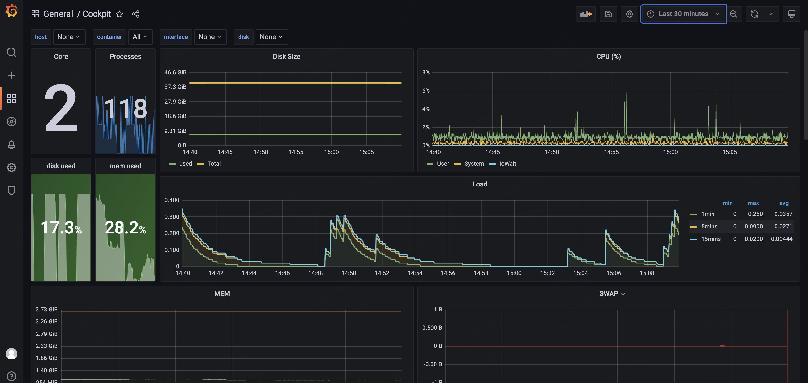

饥於學識，忠於技術。 Hungry For Knowledge, Loyal To Technology.
0%
Cockpit: A monitor program basing on grafana, glances and influxdb
Posted onEdited on
A monitor project for server resources basing on glances, influxdb 1.7 and grafana 8.
Environment
Python 3.9.4
Glances 3.2.7
Influxdb 1.7.10
Grafana 8.5.9
Show

Major Monitored Objects:
CPU(%)
Disk
Memory
Network
Deploy
Attention
There existed a dependence between influxdb and grafana and it’s significant to choose the suitable version.
The instructions in this guide require Grafana Cloud or Grafana v7.1+. For information about using InfluxDB with other versions of Grafana, see the Grafana documentation.
Glances
Glances is on PyPI, To install, simply use pip
1
pip install glances
After installing glances, we can use command glances to test it.
# single command glances --export influxdb # service vi /etc/systemd/system/glances.service ## service config, and focus on ExecStart [Unit] Description=Glances After=network.target influxd.service
[Install] WantedBy=multi-user.target # reload the systemctl systemctl daemon-reload systemctl start glances.service # auto start glance service when server start systemctl enable glances.service
Try to select data from influxdb glances databases or read glances log to ensuring data loaded.
1 2 3 4 5 6 7 8 9 10 11
# select database data, new tables will be created if data loaded successfully. influx use glances show merasurements # use journalctl to check influxdb log # real-time journalctl -f -u influxdb.service # latest 100 log line journalctl -n 100 -u influxdb.service